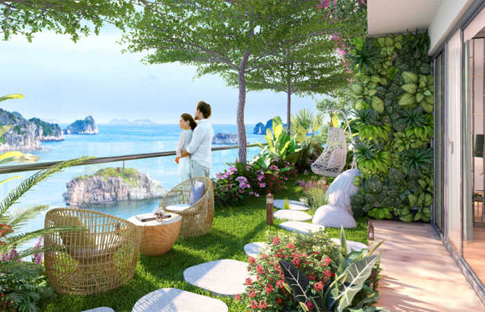
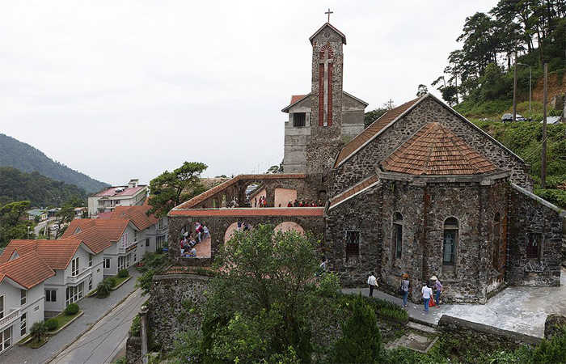
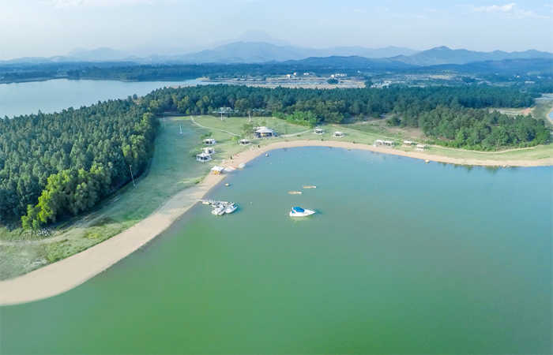
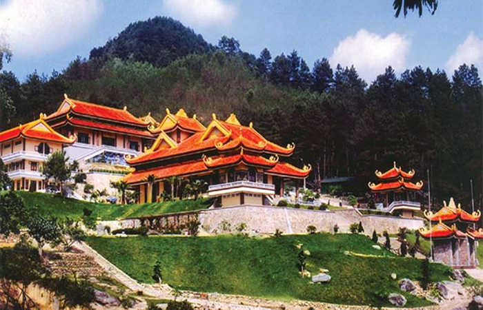
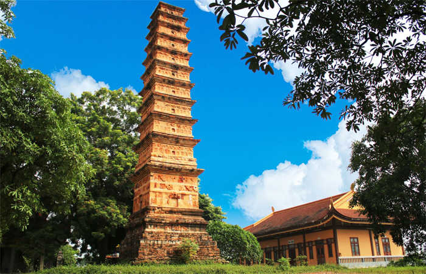
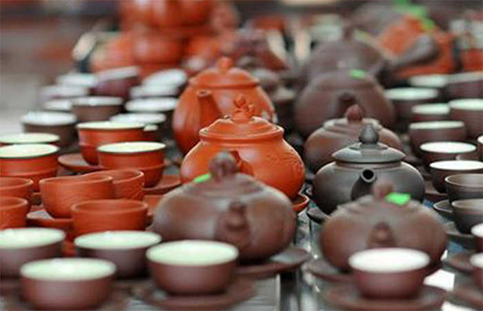
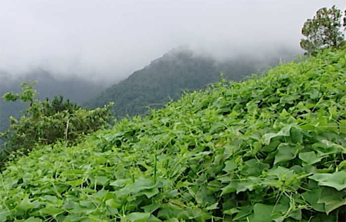
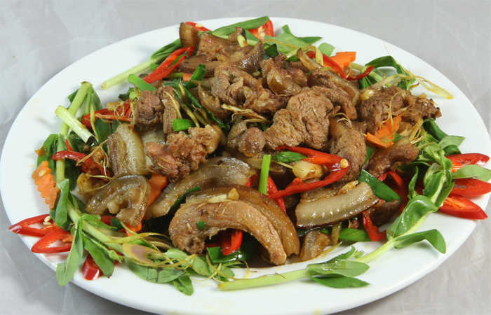
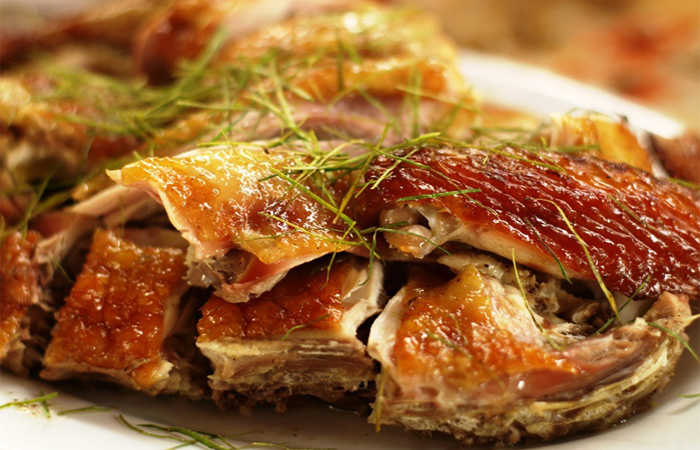

Tỉnh Vĩnh Phúc cách thủ đô Hà Nội 60km về phía Bắc, du lịch Vĩnh Phúc với nhiều điểm đến đẹp như Tam Đảo, Hồ Đại Lải, Thiền Lâm Tây Thiên thu hút nhiều du khách thăm quan.
Vĩnh Phúc là một vùng đất mang đậm màu sắc của thiên nhiên đất trời giúp cho du khách có thể thư thái về tâm hồn. Là một vùng đất cổ, nằm kế cận sân bay quốc tế Nội Bài, thuận tiện cho việc đi lại ngoạn cảnh của du khách. Để chuyến thăm quan được trọn vẹn, du khách nên chuẩn bị kỹ lưỡng hành trang. Sau đây là những kinh nghiệm du lịch Vĩnh Phúc quý giá mà chúng tôi đã tích luỹ được trong quá trình đi lại.
I. Giới Thiệu Về tỉnh Vĩnh Phúc.
Nằm trong vùng du lịch Bắc Bộ, thiên nhiên ưu đãi, tỉnh Vĩnh Phúc diện tích 1.235,2 km², có nhiều cảnh quan đặc sắc. Trung tâm tỉnh là thành phố Vĩnh Yên, thị xã Phúc Yên và có 7 huyện Bình Xuyên, Lập Thạch, sông Lô, Tam Đảo, Tam Dương, Vĩnh Tường, Yên Lạc.
Dân tộc cư ngụ: Việt, Sán Dìu, Sán Chay, Tày, Mường, Dao, H’Mông. Trong đó người Mường ở Vĩnh Phúc đứng đầu trong số những dân tộc ít người về văn hoá dân gian và kho tàng truyện thơ, ca dao, tục ngữ lẫn ca hát sinh hoạt…
Người Dao cũng có kho tàng văn nghệ dân gian đặc sắc gồm nhiều truyện cổ tích, thơ ca, bài hát. Phụ nữ Dao mặc trang phục nhiều màu chói lọi với các loại hình hoa văn ngộ nghĩnh, sặc sỡ. Người Dao in hoa văn trên vải bằng sáp ong, với kỹ thuật khéo léo.
Vì là vùng đất cổ, tỉnh Vĩnh Phúc có nhiều lễ hội đặc thù, nhiều đình, chùa cổ. Đình Thổ Tang dựng vào cuối thế kỷ 17, đình Hương Canh dựng vào đời Vĩnh Thịnh, đầu thế kỷ 18, đình Phú Mỹ vào thế kỷ 18. Tỉnh Vĩnh Phúc còn có tháp Bình Sơn ở huyện Lập Thạch dựng từ thời Lý, Trần, cao gần 16m, có 11 tầng, mỗi tầng có mái lượn cong.
II. Thời Điểm Du Lịch Vĩnh Phúc Lý Tưởng.

Thời tiết là một trong những yếu tố quan trọng quyết định đến sự trọn vẹn của chuyến du lịch của du khách. Vĩnh Phúc có 2 mùa rõ rệt là mùa mưa từ tháng 5 – tháng 10 và mùa khô từ tháng 11 – tháng 4 năm sau.
Vĩnh Phúc có nhiều thắng cảnh đẹp phù hợp với sở thích của nhiều đối tượng du khách vì thế bạn có thể đi đến đây bất kỳ lúc nào trong năm. Trước khi lên đường cần theo dõi dự báo thời tiết và chuẩn bị những vật dụng cần thiết để mang theo.
III. Hướng Dẫn Đi Đến Vĩnh Phúc.
Là một tỉnh gần thủ đô đang phát triển, hạ tầng hiện đại, phần lớn khách du lịch Vĩnh Phúc đến từ Hà Nội và từ đây bạn có thể lựa chọn nhiều phương tiện khác nhau như xe khách, xe bus, tàu hoả, xe máy…
Với phương tiện cá nhân khi đi lại sẽ giúp cho bạn có thể tự chủ về thời gian, có thể dừng lại nhiều nơi có cảnh đẹp dọc dường để chụp hình khoe với bạn bè trên mạng xã hội.
Xe buýt: Hà Nội – Vĩnh Phúc.
Du khách ở thủ đô có thể bắt tuyến xe buýt số 58 Yên Phụ – Mê Linh (tại trạm dừng Long Biên) hoặc tuyến số 7 tại trạm dừng Mê Linh Plaza. Tiếp đó là bắt xe bus số 1 đi Vĩnh Phúc. Đây là cách mà nhiều nhiều bạn trẻ, sinh viên, hay lựa chọn vì giá rẻ.
Xe Máy: Hà Nội – Vĩnh Phúc.
Là phương tiện được nhiều phượt thủ lựa chọn. Bạn có thể đi theo hướng dẫn sau: Từ Hà Nội – đi đường Phạm Văn Đồng lên cần Thăng Long về hướng Nội Bài – tới ngã 3 vòng xoay ngã 4 vĩnh Phúc – Sóc Sơn – rẽ trái theo biển hướng dẫn trên đường đi Vĩnh Yên – Vĩnh Phúc – chay thẳng tầm 45km là đến Vĩnh Phúc.
Tàu Hoả: Bạn có thể mua vé của chuyến tàu Hà Nội – Lào Cai tại ga Hà Nội hoặc ga Gia Lâm sau đó xuống ga Vĩnh Yên. Giá vé tầm 40k.
IV. Khách Sạn Vĩnh Phúc Chất Lượng Cho Khách Du Lịch.
Nếu bạn muốn khám phá trọn vẹn, công việc đầu tiên khi đến Vĩnh Phúc là tìm đến khách sạn, nhà nghỉ để nghỉ ngơi và nạp năng lượng. Theo kinh nghiệm của Du Lịch Việt, bạn nên chọn những khách sạn, nhà nghỉ gần trung tâm thành phố hoặc khách sạn gần địa điểm du lịch để tiện bề đi lại. Dưới đây là một vài khách sạn chất lượng và giá thành hợp lý được nhiều du khách bình chọn.
1. Tam Dao Star Hotel
Khách sạn được thiết kế theo chuẩn 3 sao. Toạ lạc tại trung tâm thị trấn Tam Đảo, huyện Tam Đảo, tỉnh Vĩnh Phúc. Nội thất đơn giản nhưng ấm cúm khiến cho du khách cảm giác tự nhiên gần gũi. Bên cạnh đó khách sạn Tam Dao Star ở vị trí ngay trung tâm thị trấn Tam Đảo thuận tiện cho việc đi lại thăm quan vườn quốc gia Tam Đảo, làng ha Mê Linh nhưng giá cả lại khá rẻ, nhân viên phục vụ nhiệt tình, chu đáo.
2. Belvedere Tam Dao resort
Khách sạn được thiết kế chuẩn 4 sao, tại khu 2 thị trấn Tam Đảo, huyện Tam Đảo, tỉnh Vĩnh Phúc. Với đầy đủ tiện nghi, khuôn viên rộng 30ha, bao gồm những biệt thự sang trọng có tầm nhìn đẹp về phía núi rừng. Nội thất được bày trí trang nhã, sang trọng, Belvedere Tam Dao resort sẽ mang lại sự hài lòng cho mọi đối tượng du khách. Giá phòng chỉ từ 1,8 tr vnđ/ngày.
3. FLC Vĩnh Phúc
Là một khu resort thiết kế theo chuẩn 5 sao theo chuẩn quốc tế. Toạ lạc tại xã Vinh Thinh, trục quốc lộ 13, Vĩnh Yên, tỉnh Vĩnh Phúc
Khi đến FLC Vĩnh Phúc hiện ra với cảnh bình yên, lắng đọng. Resort là sự kết hợp hài hoà giữa giá trị kiến trúc với không gian xanh mướt cỏ cây. Khi sống trong không gian này sẽ khiến cho du khách cảm thấy xua tam bao căng thẳng, mệt mỏi cua thế giới bên ngoài.
Giá thuê phòng chỉ từ 1 triệu – 2 triệu/ngày (tuỳ phòng)
V. Hướng Dẫn Đi Lại Tại Vĩnh Phúc.
Vĩnh Phúc là một tỉnh đang phát triển mạnh về hạ tầng, khách du lịch Vĩnh Phúc có thể đi lại bằng nhiều phương tiện khác nhau như xe máy, taxi, xe buýt…
Xe máy: Bạn có thể dể dàng thuê xe máy bằng cách liên hệ với lễ tân khách sạn nơi mình đang cư trú chỉ với cmnd và bằng lái xe. Giá thuê xe máy từ 120k – 250k/xe/ngày. Đây là phương tiện đi lại tiện ích nếu bạn đi lẻ.
Nếu du khách đi với gia đình có thể gọi xe taxi. Hiện địa bàn Vĩnh Phúc có một số hãng taxi chất lượng đang hoạt động như:
+ Taxi Mai Linh – Điện thoại : 0211.6.26.26.26 ; Taxi Ngọc Lan – Điện thoại : 0211.3.87.87.87
+ Taxi Thịnh Hưng – Điện thoại : 0211.3.59.59.59 ; Taxi Nhật Linh – Điện thoại : 0211.3.68.68.68
+ Taxi ATA – Điện thoại : 0211.3.63.63.63 ; Taxi Tam Gia – Điện thoại : 0211.3.81.81.81
+ Taxi Đồng Tâm – Điện thoại : 0211.3.69.69.69 ; Taxi Thành Công – Điện thoại :0211.6.57.57.57
+ Taxi Hà Anh – Điện thoại : 0211.3.75.75.75 ; Taxi Thiên Đức – Điện thoại : 0211.3.56.56.56
+ Taxi Huy Hoàng – Điện thoại : 0211.3.86.86.86 ; Taxi Vĩnh Yên : Điện thoại: 0211.3.65.65.65
VI. Địa Điểm Du Lịch Vĩnh Phúc Không Thể Bỏ Qua.
Sau khi đã có chổ ở ổn định để nghỉ ngơi. Du khách có thể an tâm hành trình khám phá vùng đất cổ Vĩnh Phúc. Sau đây là những địa điểm thăm quan hấp dẫn bạn không nên bỏ qua.
1. Tam Đảo.
Là địa điểm thăm quan hấp dẫn được nhiều du khách nghỉ đến đầu tiên khi du lịch Vĩnh Phúc. Tam Đảo gồm 3 ngọn núi có độ cao từ 1375 – 1400m thuộc thị trấn Tam Đảo, cách thủ đô Hà Nội 80km.
Khi du lịch Tam Đảo, du khách sẽ được hưởng thụ một khung cảnh thiên nhiên mát mẻ, nhiều danh lam thắng cảnh hấp dẫn như:
– Nhà thờ Cổ Tam Đảo: Được xây dựng theo kiến trúc châu âu (kiến trúc Gothic) trên một triền đất cao. Với vật liệu xây dựng là đá, gồm 2 tầng, tầng dưới có nhiều lối đi bên mặt đường lớn, hai bên sườn nhà là hai lối đi dẫn lên trên. Khi bạn đứng tại nơi nào cung thung lũng Tam Đảo cũng có thể nhìn thấy nhà thờ cổ Tam Đảo hiện ra với vẻ đẹp cổ kính, rêu phong bởi trải quan thời gian dài bị sự tác động của lịch sử.

– Đền Mẫu Bà Chúa Thượng Ngàn: Là một công trình kiến trúc nổi tiếng trên núi Thiên Thị, với vẻ đẹp nên thơ. Để đến đây du khách phải bước trên 200 bậc đá được sắp xếp ngay ngắn. Quãng đường đi đến đền Mẫu được trồng nhiều cây xanh rợp bóng, có khí hậu trong lành.
– Tháp Truyền Hình: Là công trình đặc sắc trên núi Thiên Thị, đoạn đường đi đến đây sẽ khó khăn hơn nhưng bù lại du khách sẽ được thưởng ngoạn cảnh đẹp hơn, với nhiều lá hoa cỏ sắc. Khi lên đến đỉnh núi bạn có thể thu vào tầm mắt muôn trùng nước non, cảnh Tam Đảo chìm trong sương trắng mờ ảo.
– Quán Gió Tam Đảo: Là địa điểm mới xuất hiện được truyền miệng từ các cộng đồng phượt thủ. Đây là điểm dừng chân lý tưởng du khách có thể hưởng thụ bầu không khí trong lành, mát mẻ cũng như cảm nhận được thời tiết 4 mùa trong 1 ngày.
2. Hồ Đại Lải.

Là một hồ nước ngọt nhân tạo rộng 525ha, mặt hồ có độ cao trung bình 21,5m, trên đảo chim rộng 3ha, chỗ cao nhất 23m. Phía Tây và Tây Nam hồ có núi Thằn Lằn. Cạnh hồ có rừng tự nhiên Ngọc Thanh rộng 500ha. Đây là nơi nghỉ dưỡng khá tốt với nhiều bãi tắm nhân tạo.
Khi đến với Hồ Đại Lải, du khách có thể được ngoạn cảnh, dạo chơi, du thuyền mặt nước, câu cá, đạp vịt, thăm quan bản làng của người dân tộc Sán Dìu, thưởng thức món ăn đặc trưng, hoặc bạn có thể hành trình khám phá núi rừng, hang dơi, dạo chơi cùng bạn bè giữa cánh rừng thông bạt ngàn.
3. Thiền Viện Trúc Lâm Tây Thiên.

Là điểm du lịch nổi tiếng, nằm trong số 3 thiền viện lớn nhất nước ta, thuộc xã Đại Đình, huyện Tam Đảo, cách thủ đô Hà Nội 85km. Nơi đây thu hút du khách thăm quan bởi là khởi thuỷ của Phật giáo tại Việt Nam. Với vẻ đẹp thiên nhiên hoang sơ khiến lòng du khách nhẹ nhõm.
Thiện viện nằm trên sườn núi cao. Khi đứng dưới châ núi nhìn lên, cảnh vật thiền viện Tây Thiên ẩn hiện trong quan cảnh thiên nhiên hoang sơ kỳ vĩ của núi rừng.
4. Làng Hoa Mê Linh.
Là điểm du lịch thú vị nằm ở xã Mê Linh, tỉnh Vĩnh Phúc. Với hàng hàng trăm loài hoa khoe sắc trong khuôn viên 200hecta. Hoa Mê Linh nổi tiếng gồm nhiều loại như hoa cúc, huệ, hồng,.. cung cấp cho thủ đô và xuất khẩu nước ngoài.
Để thăm quan vườn hoa Mê Linh bạn nên đến đây vào tháng 12 đến tháng 3 dương lịch, là thời điểm hoa nở rộ đẹp nhất. Nhiều bạn trẻ đến đây để thưởng thức hoa đẹp và chụp hình cùng với những người thân yêu.
5. Hồ Xạ Hương.
Là một thắng cảnh đẹp trữ tình nằm ở núi con Trâu, xã Minh Quang, huyện Tam Đảo. Diện tích hồ nước rộng 83ha, nhiều ngách lớn đi vào cánh rừng nguyên sinh. Quanh hồ là đập nước cao 41m, có sức chứa 12 triệu m3 nước.
Nhiều bạn trẻ thích thú khi được ngoạn cảnh hồ nước trong xanh quanh năm. Tại đây bạn có thể chèo thuyền ngắm cảnh giữa hồ nước với giá cả thuê thuyền khá rẻ.
Khi mực nước xuống thấp, bạn có thể chiêm ngưỡng những đàn cá voi bằng đá nhấp nhô dưới làn nước trông khá lạ mắt.
6. Tháp Bình Sơn.

Là một công trình kiến trúc độc đáo được xây dựng vào thời Lý – Trần. Nhờ sự bảo tồn kỹ lưỡng nên di tích vẫn còn nguyên.
Toà tháp Bình Sơn nằm cạnh chùa Vĩnh Khánh, tháp cao tầm 16m, có 11 tầng, mỗi tầng đều có mái nhô ra khá kì vĩ. Khi bước vào bên trong lòng tháp bạn sẽ thấy bên trong có hình vuông và cạnh 4,45m và tháp Bình Sơn dần nhỏ từ dưới lên trên.
7. Làng Gốm Hương Canh.

Là điểm thăm quan thú vị nằm bên trên đường quốc lộ 2, huyện Bình Xuyên, tỉnh Vĩnh Phúc. Khi đến làng gốm du khách sẽ được tìm hiểu về các công đoạn để làm ra những sản phẩm gốm như vại, chĩnh, chậu, lọ, tiểu sành kỳ công.
Làng gốm Hương Canh là làng nghề truyền thống lâu đời được nhiều người ưa chuộng bởi sản phẩm làm ra chất lượng cao, chống thấm, bảo quản tốt những sản phẩm, hương vị chứa đựng bên trong. Gốm Hương Canh được nhiều khách ở khắp tỉnh thành và nước ngoài đặt mua.
VII. Đặc Sản Vĩnh Phúc.
Trong quá trình đi du lịch Vĩnh Phúc, được thưởng thức những món ăn ngon là điều mà hầu hết du khách đều mong muốn. Nhiều du khách lần đầu đến với Vĩnh Phúc thường hay thắc mắc là nên ăn gì khi đến Vĩnh Phúc ? Dưới đây là những món ăn ngon được nhiều du khách đánh giá cao, bạn không nên bỏ lỡ.
1. Su su.

Một khi đến Tam Đảo hầu hết du khách đều thích thưởng thức Su Su. Với khí hậu mát mẻ, hệ thống thực vật phát triển, trong đó Su Su là món ăn trứ danh của Tam Đảo. Khi thưởng thức bạn sẽ cảm nhận được hương vị ngon mềm, giòn, vị ngọt mát tự nhiên.
Ngọn Su Su được bà con địa phương ngắt và chế biến thành nhiều món ăn hấp dẫn như su su sào, canh su su, su su nấu thịt khi ăn mềm, ngọt và giải nhiệt khá tốt.
2. Thịt Lợn Mán.

Sự tinh tuý trong món ăn này là nguyên liệu làm nên nó là thịt lợn. Những chú lợn này không phải nuôi trong chuồng trại mà được nuôi thả tự nhiên. Chú phải thường xuyên di chuyển, ăn những cây cỏ trên rừng, núi nên thịt lợn khá săn chắc, ít mỡ.
Nhiều du khách thích thú với món thịt lợn mán xào xả ớt thơm nồng, giòn dai hoặc bạn có thể thưởng thức thịt lợn hấp rồi ăn kèm rau húng cũng khá thú vị đấy.
3. Gà Đồi.

Vẫn là cách nuôi thả tự nhiên. Những chú gà sẽ tự đi tìm thức ăn trên đồi núi. Đặc điểm của thịt gà đồi là săn chắc dai và thường xuyên phải di chuyển, tìm kiếm thức ăn, sinh sống trong môi trường mưa gió trên núi.
Khi chế biến gà đồi thành những món như xào xả, chiêng, nướng thịt gà trở nên thơm ngon. Đặc biệt là món thịt gà độc bọc đất nước khiến cho du khách ăn một lần nhớ mãi.
4. Món nướng Tam Đảo
Thời tiết của Tam Đảo, Vĩnh Phúc mát mẻ, có lúc se lạnh, khi du lịch mà được thưởng thức món xiên nướng là điều được nhiều du khách yêu thích. Khi ăn xiên thịt lợn đồi cùng với rau, củ sẽ khá hấp dẫn và thú vị.
Ngoài những địa điểm du lịch và những món ăn đặc sắc trên Vĩnh Phúc còn nhiều điều kỳ thú đang chờ du khách đến khám phá!